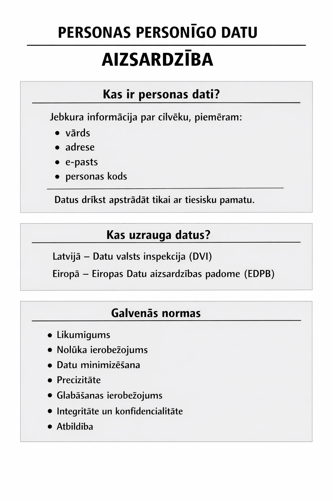

Anotācija
Darbs skaidro, kas ir personas datu aizsardzība un kāpēc tā ir būtiska mūsdienu digitālajā vidē. Tajā tiek analizēti galvenie GDPR principi un institūcijas, kas uzrauga datu apstrādes kārtību, kā arī praktiskie drošības pasākumi, kas nodrošina personas datu konfidencialitāti un drošību. Darbs parāda, kā tiek īstenota datu aizsardzība gan juridiskā, gan tehniskā līmenī un kādas sekas var rasties, ja prasības netiek ievērotas.
Atslēgvārdi: personas dati, datu aizsardzība, GDPR, privātums, drošība, Datu valsts inspekcija.
Ievads
Darba tēma "Personas personīgo datu aizsardzība" izvēlēta, lai noskaidrotu, kā tiek nodrošināta cilvēku privāto datu drošība digitālajā vidē un kāpēc tā ir svarīga. Darba mērķis ir izpētīt, kas ir personas dati, kādi ir to aizsardzības pamatprincipi un kādas institūcijas uzrauga datu apstrādi Latvijā un Eiropas Savienībā. Pētījums balstās uz informācijas analīzi, izmantojot uzticamus interneta avotus.
Kas ir personas personīgie dati?
Personas dati ir jebkura informācija, kas attiecas uz identificētu vai identificējamu fizisku personu, piemēram, vārds, adrese, e-pasts, personas kods u.c. Personas datu apstrāde drīkst notikt tikai tad, ja pastāv tiesisks pamats, piemēram, piekrišana vai likumā noteikta prasība.
Eiropas Savienībā datu aizsardzību regulē Vispārīgā datu aizsardzības regula (GDPR), kas nosaka pamatprincipus: likumīgums, caurskatāmība, nolūka ierobežojums, datu minimizēšana, precizitāte un glabāšanas ierobežojums.
Kas uzrauga personas datus Latvijā un Eiropā?
Latvijā par datu aizsardzības uzraudzību atbild Datu valsts inspekcija (DVI), kas izskata sūdzības, sniedz konsultācijas un uzrauga, lai tiktu ievērotas datu aizsardzības prasības.
Eiropas līmenī darbojas Eiropas Datu aizsardzības padome (EDPB), kas publicē vadlīnijas un rekomendācijas, lai vienoti piemērotu GDPR visās dalībvalstīs.
Praksē par GDPR pārkāpumiem uzņēmumiem tiek piemēroti ievērojami sodi. Piemēram, 2024. gadā Eiropas uzraugi uzlika uzņēmumam Meta 251 miljonu eiro sodu par datu aizsardzības pārkāpumiem.
Galvenās normas personas datu aizsardzībā
Vispārīgā datu aizsardzības regula (GDPR) paredz šādus pamatprincipus:
Likumīgums, godprātība un caurskatāmība
Dati jāapstrādā tikai uz likumīga pamata, godīgi un saprotami.
Nolūka ierobežojums
Dati drīkst tikt vākti tikai konkrētiem, skaidriem mērķiem.
Datu minimizēšana
Drīkst apstrādāt tikai tik daudz datu, cik nepieciešams konkrētajam nolūkam.
Precizitāte
Dati jāuztur aktuāli un jālabo neprecīza informācija.
Glabāšanas ierobežojums
Personas datus nedrīkst glabāt ilgāk, nekā tas nepieciešams.
Integritāte un konfidencialitāte
Dati jāaizsargā pret nesankcionētu piekļuvi, noplūdi vai zudumu.
Atbildība
Datu pārzinim ir jāpierāda, ka viņš ievēro visus GDPR principus un normas.
Kā tiek aizsargāti personas dati
Personas datu aizsardzība notiek vairākos līmeņos – gan juridiskā, gan tehniskā, gan organizatoriskā.
5.1. Juridiskais regulējums
Eiropas Savienībā galvenais normatīvais akts ir Vispārīgā datu aizsardzības regula (GDPR). Tā nosaka, kādos gadījumos un ar kādiem nosacījumiem drīkst apstrādāt personas datus.
5.2. Uzraugošās institūcijas
Latvijā datu aizsardzību kontrolē Datu valsts inspekcija, kas uzrauga normu ievērošanu, izvērtē sūdzības un piemēro sankcijas, ja konstatēti pārkāpumi.
5.3. Organizatoriskie pasākumi
Uzņēmumiem un iestādēm jāievieš iekšējās kārtības, piemēram, jāierobežo piekļuve datiem tikai tiem darbiniekiem, kuriem tas ir nepieciešams, jāveic regulāras darbinieku apmācības.
5.4. Tehniskie pasākumi
Datu aizsardzībai izmanto paroles, šifrēšanu, ugunsmūrus, datu rezerves kopijas un drošus serverus. Tas palīdz novērst nesankcionētu piekļuvi vai datu noplūdi.
5.5. Atbildība un sodi
Par pārkāpumiem uzraugošās iestādes var piemērot brīdinājumus vai pat milzīgus naudas sodus, kas stimulē uzņēmumus atbildīgi apieties ar datiem.
Secinājumi
- Personas dati ir jebkura informācija, pēc kuras cilvēku var identificēt, tāpēc to aizsardzība ir būtiska privātuma nodrošināšanai digitālajā vidē.
- Vispārīgā datu aizsardzības regula (GDPR) nosaka skaidrus datu apstrādes principus — likumīgumu, datu minimizēšanu, caurskatāmību un glabāšanas ierobežojumu, kas palīdz pasargāt cilvēku tiesības.
- Latvijā datu apstrādes uzraudzību nodrošina Datu valsts inspekcija, kas kontrolē, lai organizācijas ievērotu noteikumus un godprātīgi rīkotos ar personas datiem.
- Personas datu aizsardzība balstās ne tikai juridiskos, bet arī tehniskos un organizatoriskos pasākumos, piemēram, piekļuves ierobežošanā, šifrēšanā un darbinieku apmācībās.
- Par datu aizsardzības prasību pārkāpumiem organizācijām var tikt piemēroti ievērojami naudas sodi, kas motivē uzņēmumus atbildīgi pārvaldīt personas datus.
Plakāts

Informācijas avoti
-
Edīte Brikmane. (2018). Kas ir personas dati? Vispārīgā datu aizsardzības regula.
lvportals.lv — Kas ir personas dati? -
Birkmane, E. (2018). Personas datu apstrādes principi. Vispārīgā datu aizsardzības regula.
lvportals.lv — Personas datu apstrādes principi -
Datu valsts inspekcija. (2022). Kas ir un kā ziņot par personas datu aizsardzības pārkāpumu.
dvi.gov.lv — Kas ir un kā ziņot par datu pārkāpumu -
European Data Protection Board. Guidelines, Recommendations, Best Practices.
edpb.europa.eu — Guidelines & Recommendations -
Reuters. (2024, December 17). EU privacy regulator fines Meta 251 million euros for 2018 breach.
reuters.com — EU fines Meta 251 million euros